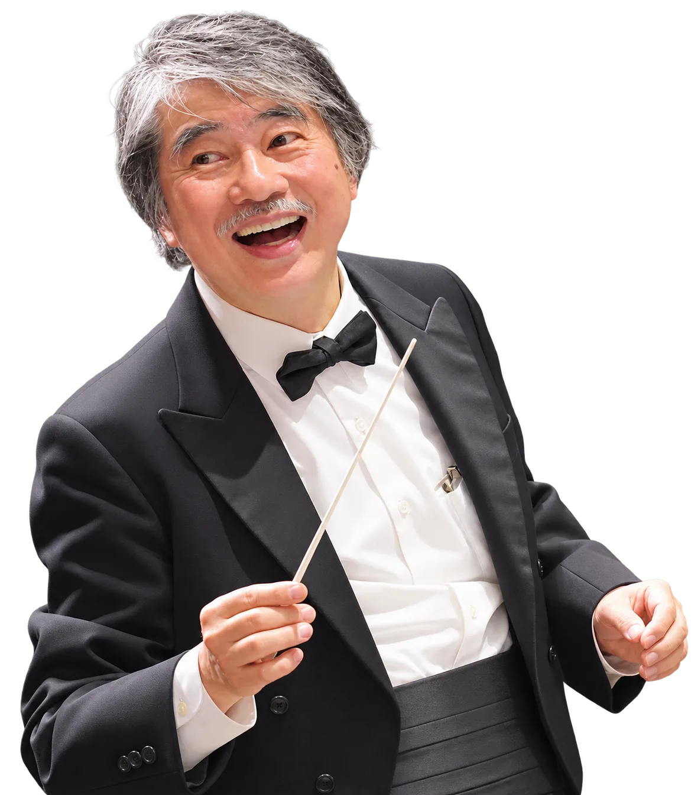

演奏参加
2,000円
ADMIT ONE ・ PLAYER

音楽をつくる過程を、
ともに学ぶ一日
PROGRAM
リハーサルを“見せる”のではなく、音楽ができあがっていく過程そのものをみんなで体験する3時間です。
ひがすいが現在練習中の楽曲のリハーサル・合奏指導。
初見合奏・実践的なリハーサル。
質疑応答・振り返り。
音楽を つくる過程を、 ともに学ぶ一日。

TEACHER
Tak Maeda
カナダ西海岸を拠点に活動する指揮者・音楽指導者。現在、複数の市民吹奏楽団で音楽監督・指導者を務める。
各地の音楽フェスティバルでの審査・講師、学校での訪問指導やワークショップなど、次世代の音楽教育にも積極的に取り組んでいる。
ENTRY
東大阪吹奏楽団員以外の方も、楽器を持ってご参加いただけます。
演奏参加
2,000円
聴講
無料
お支払い・キャンセルについては特定商取引法に基づく表記をご確認ください。
INFORMATION